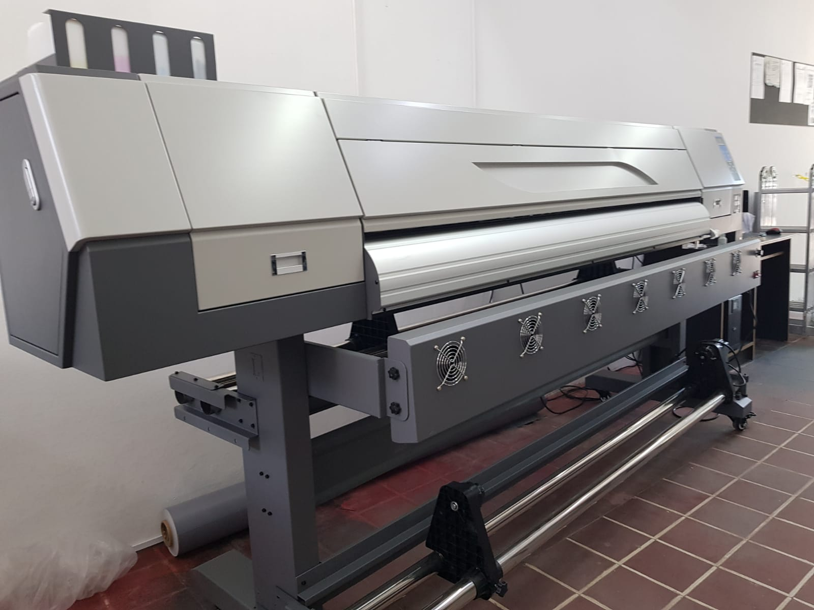

Un poco de nosotros
Nuestros comienzos
Todo se remonta a principios de los años 2000, en un galpon al fondo de la casa de su dueño fundador, Pablo Dominguez, con apenas trainta y tantos años de edad y una familia por mantener. Producto de una situacion delicada laboralmente, decide dar comienzo a un proyecto casero que culminaria con lo que hoy es Grafic Express Comunicación Visual. En el año 2007 se relocaliza en la ciudad de Chascomús, donde el taller armado por hobbie muta al taller de trabajo full-time en la calle Remedios de Escalada.


Apertura
Desde ese momento, Grafic Express se consolidó como una PyME en pleno crecimiento, a fuerza de duro trabajo y esfuerzo familiar. Teniendo dos complicadas mudanzas en su haber, el día de hoy se encuentra en la calle Maipú 226, emplazado en una casona antigua remodelada como local, frente a lo que supo ser la vieja estacion ferrocarril de Chascomús, convertida hoy en un museo, y frente a una de las plazas mas icónicas de la ciudad, y con una incipiente cede en la ciudad de La Plata.
La actualidad
Contamos con toda la infraestructura para brindar un servicio integral, desde el diseño digital hasta la confección y colocación de todo tipo de carteles y estructuras, con un acabado profesional de primer nivel, pero aún manteniendo la atención al cliente y las buenas formas de un comercio de barrio que es atendido por sus dueños, donde prima principalmente la comodidad y el buen servicio personalizado. Con estas bases, hoy somos proveedores de empresas como YPF, Nestlé, Conarco, Automovil Club Argentino y Municipalidades de Chascomús, Lezama y Ranchos. Nuestra cartera de clientes abarca desde la costa atlántica, hasta el interior del país, ya que realizamos envíos a todo Argentina mediante Mercado Envíos.

Nuestra maquinária / Novedades
Nuestra ultima incorporación fue un plotter de impresión Alwin de 1.80mts de luz
